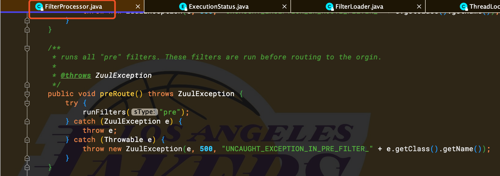
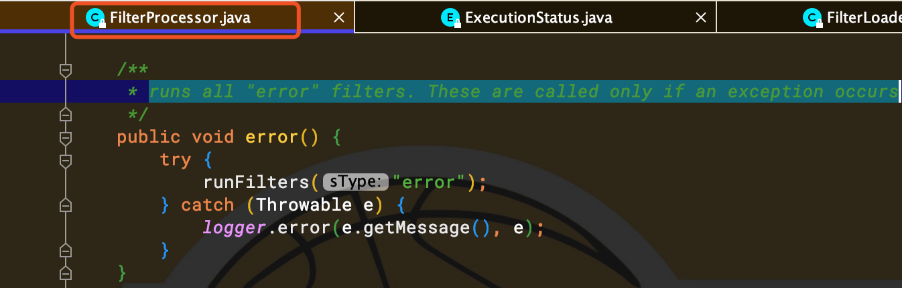

zuul的核心逻辑都是由一系列filter过滤器链实现的，但是filter的类型不同，执行的时机也不同，效果自然也不一样，主要特点如下：
zuul内部有一套完整的机制，可以动态读取编译运行filter机制，filter与filter之间不直接通信，在请求线程中会通过RequestContext来共享状态，它内部是用ThreadLocal实现的，例如HttpServletRequest、HttpServletResponse、异常信息等。部分源码如下：
public class RequestContext extends ConcurrentHashMap<String, Object> {
private static final Logger LOG = LoggerFactory.getLogger(RequestContext.class);
protected static Class<? extends RequestContext> contextClass = RequestContext.class;
private static RequestContext testContext = null;
protected static final ThreadLocal<? extends RequestContext> threadLocal = new ThreadLocal<RequestContext>() {
@Override
protected RequestContext initialValue() {
try {
return contextClass.newInstance();
} catch (Throwable e) {
throw new RuntimeException(e);
}
}
};
//.......
}zuul中不同类型的filter执行逻辑的核心在ZuulServlet类中，主要代码如下：
public class ZuulServlet extends HttpServlet {
private static final long serialVersionUID = -3374242278843351500L;
private ZuulRunner zuulRunner;
@Override
public void init(ServletConfig config) throws ServletException {
super.init(config);
String bufferReqsStr = config.getInitParameter("buffer-requests");
boolean bufferReqs = bufferReqsStr != null && bufferReqsStr.equals("true") ? true : false;
zuulRunner = new ZuulRunner(bufferReqs);
}
@Override
public void service(javax.servlet.ServletRequest servletRequest, javax.servlet.ServletResponse servletResponse) throws ServletException, IOException {
try {
init((HttpServletRequest) servletRequest, (HttpServletResponse) servletResponse);
// Marks this request as having passed through the "Zuul engine", as opposed to servlets
// explicitly bound in web.xml, for which requests will not have the same data attached
RequestContext context = RequestContext.getCurrentContext();
context.setZuulEngineRan();
try {
preRoute(); //如果preRoute方法在执行的时候出现异常，直接就抛出500异常，不会走catch中的error方法，见下图FilterProcessor类中的preRoute方法。
} catch (ZuulException e) {
error(e); //如果preRoute在执行过程中，抛出Zuul异常，这里被捕捉到以后，会执行error方法，打印堆栈信息，见下图FilterProcessor类中的error方法。
postRoute();
return;
}
try {
route();
} catch (ZuulException e) {
error(e);
postRoute();
return;
}
try {
postRoute();
} catch (ZuulException e) {
error(e);
return;
}
} catch (Throwable e) {
error(new ZuulException(e, 500, "UNHANDLED_EXCEPTION_" + e.getClass().getName()));
} finally {
RequestContext.getCurrentContext().unset();
}
}
//.......
}

zuul一共有4种不同的生命周期：